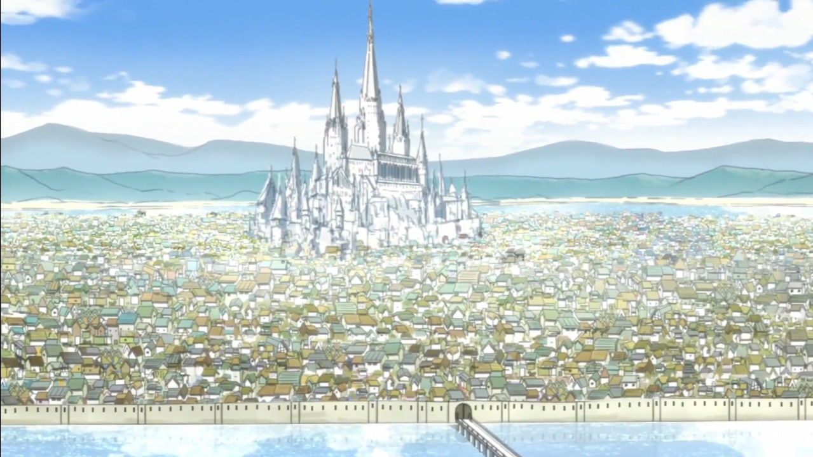
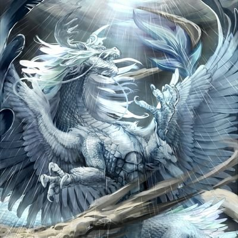
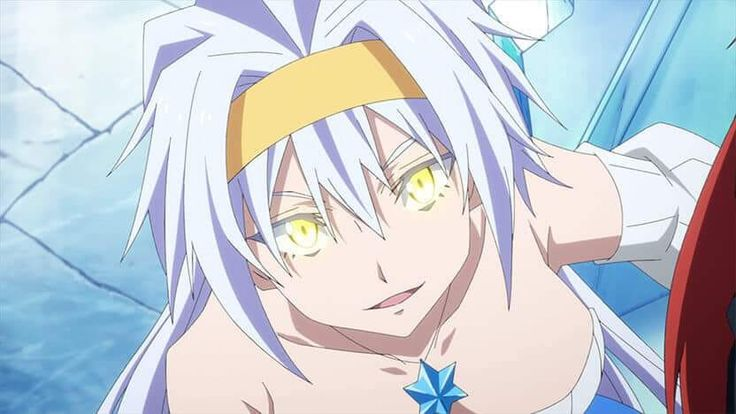
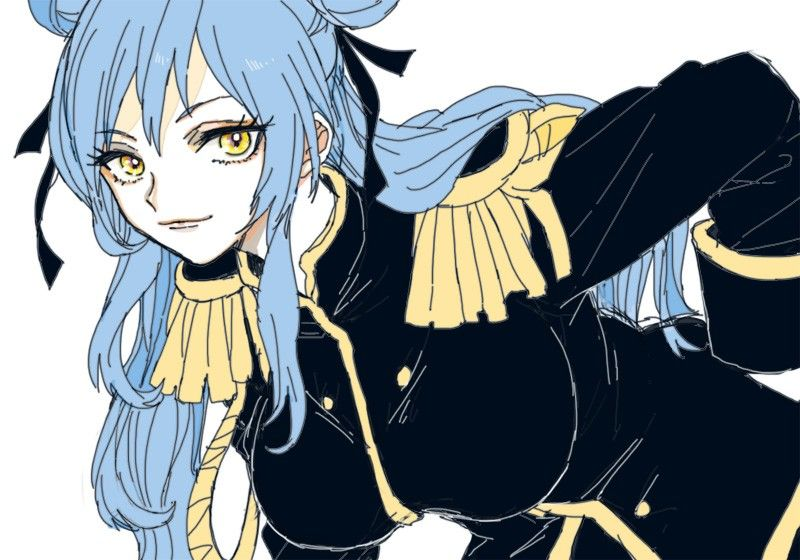
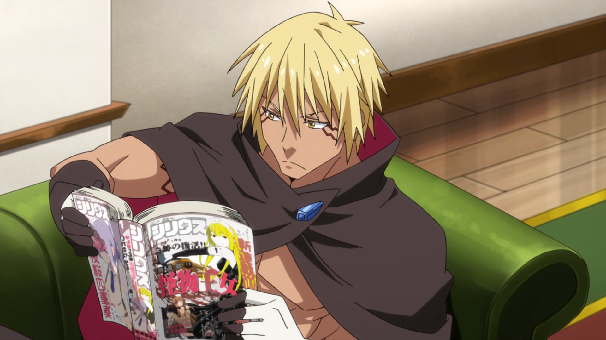
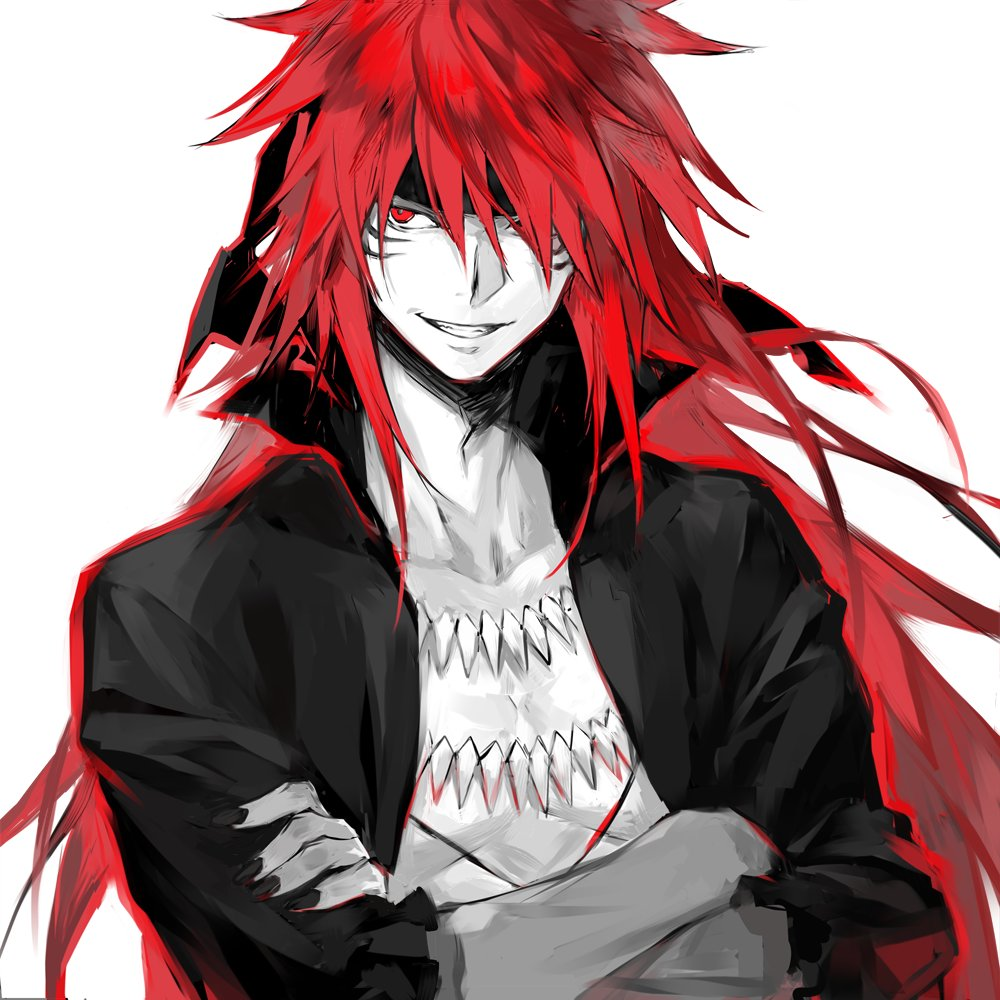
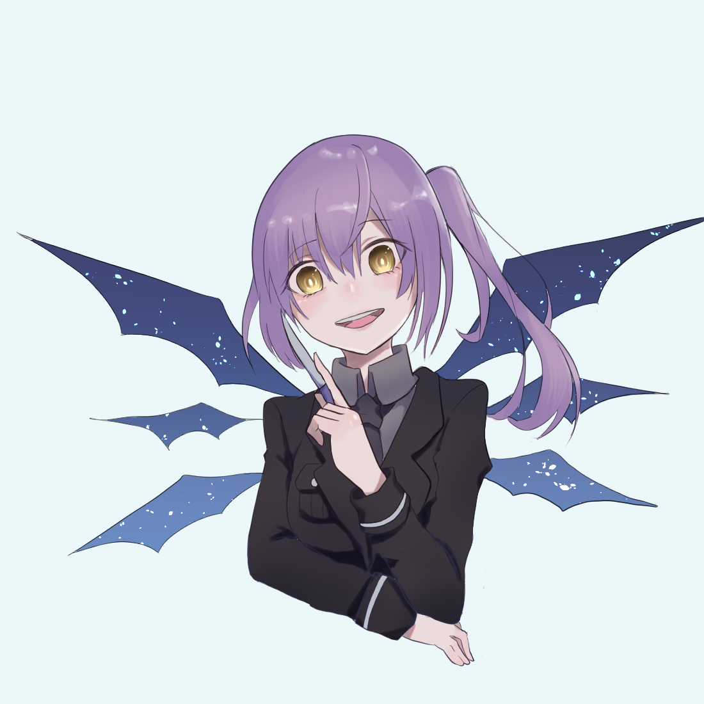
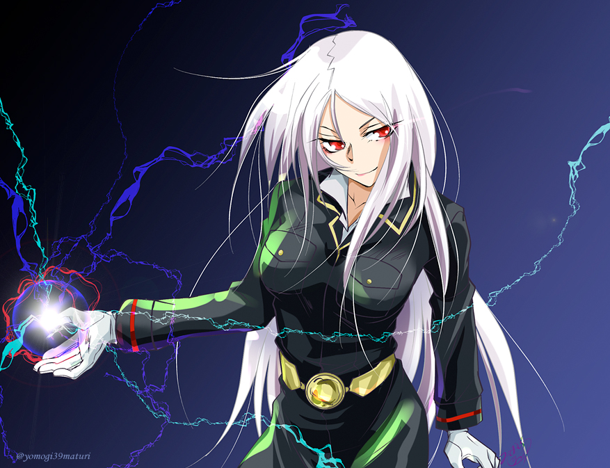
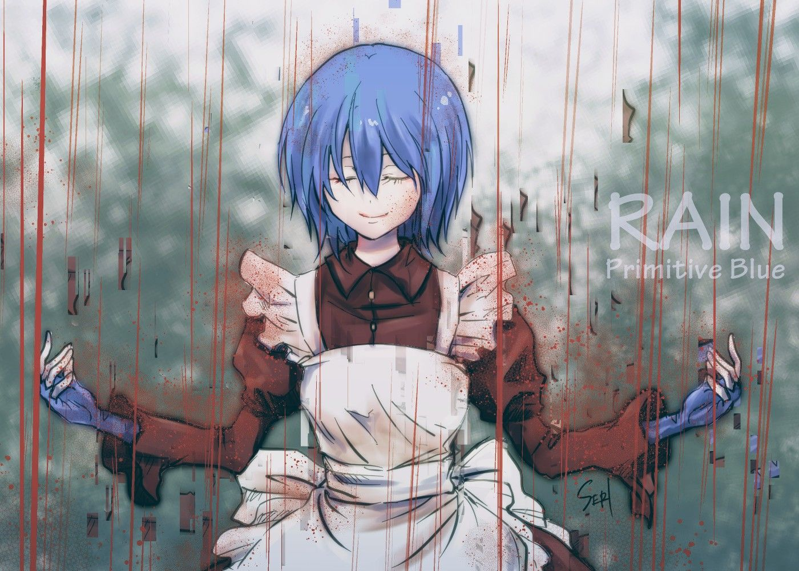
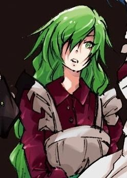

(転生したらスライムだった件 Tensei Shitara Slime Datta Ken),
disingkat TenSura (転スラ Ten Sura), adalah seri novel ringan yang ditulis oleh Fuse dan diilustrasikan oleh Mitz Vah.
Ini awalnya dimulai sebagai novel web yang dihosting di "Shōsetsuka ni Nar" antara 2013-2016.
Serial ini diakuisisi oleh Micro Magazine, yang menerbitkan volume novel ringan pertama pada tahun 2014.
Serial ini kemudian akan menerima beberapa adaptasi manga dan adaptasi serial televisi anime oleh Studio 8-Bit.
Plot
Hellow kawan Wibu semuanya!,
Di konten kali ini Kita akan membahas seputar Anime bertema Isekai yang berjudul Tensura yang merupakan singkatan dari
"Tensei Shittara Datta Ken",
Anime ini menceritakan tentang seorang pekerja kantoran paruh baya berusia 37 tahun bernama Mikami Satoru,
yang mati karena terbunuh oleh orang tak dikenal,
lalu kemudian Dirinya bereinkarnasi ke Dunia lain yang terdapat kekuatan sihir dan magis.
Di Dunia lain tersebut Ia hidup sebagai slime dan bertemu dengan seekor naga di sebuah gua yang bernama Veldora,
disitu Mereka berkenalan dan saling menjalin hubungan pertemanan,
sebagai hasilnya Mereka memberikan Nama marga masing-masing satu sama lain.
karena ras monster di dunia sana tidak punya nama, yaitu "Tempest".
Jadi Satoru yang merupakan Slime, berganti nama menjadi "Rimuru Tempest", dan Sang Naga, Veldora, menjadi "Veldora Tempest".
namun karena Veldora terkurung oleh "Unlimited Prison" selama 300 tahun,
Rimuru memutuskan membawanya bersamanya dengan melahapnya untuk hidup sementara dalam perutnya.
Banyak orang yang akan saling bertemu dengan Rimuru,
Apakah kisahnya akan berakhir bahagia tanpa konflik? Nantikan petualangannya dengan menonton Anime-nya di
Situs Resmi-nya .
Powers Entity
Di Dunia Tensura ini hidup berbagai macam kehidupan dan tentunya kekuatan magis bernama "Skill" dan "Ultimate Skill".
Berbagai macam ras menggunakannya termasuk manusia.
Di Dunia Tensura, ada sebuah Benua dengan 2 Kubu wilayah yang berbeda yang dipegang Manusia.
yaitu :
Bangsa Barat

Wilayah ini terdapat banyak kerajaan Manusia yang saling menjalin hubungan diplomatik,
ada banyak yang namanya Petualang dan Guild.
Karena wilayah barat juga tempat monster tinggal, makanya Mereka diburu dan baik harta maupun tubuh akan dijadikan sebagai hadiah.
Yah... terkadang ada monster dengan kecerdasan juga yang dihindari oleh manusia.
Satu konferensi yang menyatukan semua Bangsa Barat
adalah "Dewan Barat".
Bangsa Timur
Hanya ada satu negara di wilayah timur, yakni "Kekaisaran Timur"
Kekaisaran ini telah ada sejak waktu yang lama,
Kekaisaran ini awalnya punya ambisi untuk menyatukan "Bangsa Barat" dan "Bangsa Timur"
untuk hidup bersama. Namun Kaisar Rudra telah bereinkarnasi ribuan kali yang membuat
"fragmen" jiwa-nya hilang sedikit semi sedikit yang
menyebabkan perubahan sifat Sang Kaisar dari perdamaian menjadi "Dominasi".
Banyak sejarah magis tentang Sang Kaisar dan awal mula
bertemu Ras Demon terkuat, yaitu Guy Crimson. Nanti Ane ceritakan ya...
Banyak berbagai macam Ras yang ada di Dunia tersebut, yaitu :
1.) True Dragon
Ras ini dikenal sebagai ras Dewa yang menciptakan dan berkuasa di Dunia Tensura,
hanya ada 4 True Dragon di Tensura, dan Veldora adalah salah satunya sebagai yang paling muda.
Dan 3 lainnya yaitu :
Veldanava

Ia adalah Eksistensi dengan otoritas tertinggi yang tercipta dari "kekosongan" kemudian menciptakan Dunia Tensura.
Ia berafinitas sebagai "Star King Dragon", yaitu pencipta segala sihir Magis "skill" dan "Ultimate Skill"
Ada sebuah tragedi besar dimana Dirinya dinyatakan terbunuh namun ada juga legenda Dia menghilang entah kemana,
dan bisa bangkit dengan sendirinya, namun Dia tidak punya alasan untuk kembali.
( Ilustrasi bukan sebenarnya, sosoknya masih belum diketahui...)
Velzard

Ia adalah Eksistensi ke-2 setelah Veldanava. Dalam wujud manusia-nya,
Dia adalah seorang wanita dewasa yang merupakan Kakak ke-2 Veldora.
Kadangkala Ia akan menggunakan "Tubuh Remaja"-nya, untuk menekan aura kekuatan magis-nya yang sangat besar.
Ia berafinitas sebagai "Ice White Dragon", yaitu Naga yang memiliki kekuatan "Es Mutlak"
Velgrynd

Ia adalah Kakak ke-3 dari Veldora. Ia secara spesial memiliki hubungan dengan Kaisar Rudra dari Kekaisaran Timur.
Ia juga berwujud sebagai wanita dewasa.
Ia akan melakukan apa saja demi Kaisar mau itu baik maupun buruk.
Sesuai afinitasnya, Ia merupakan seorang dengan kepribadian Pemarah yang tidak suka skema rumit.
Disamping itu,
Ia sangat menyayangi Adiknya, Veldora. Kadangkala Ia akan bertarung dengan Velzard
hanya karena memperebutkan hak asuh Adik Mereka.
Alasan Mereka salingg bertarung karena Velgrynd tidak setuju jika Veldora di didik dengan keras oleh Velzard.
Ia berafinitas sebagai "Scorch Dragon", yaitu Naga pemilik segala sihir "bara atau api".
Veldora

Ia adalah yang termuda diantara ras "True Dragon" lainnya, Ia adalah sahabat karib Rimuru Tempest. Dan juga
karena Ia sudah menjelajahi isi Otak Rimuru sebelum bereinkarnasi, Ia mengenal yang namanya
"Manga" yang merupakan bentuk komik dari Anime. Yah... bisa dibilang karakter satu ini adalah yang favorit dan
paling sableng, hahah...
Ia berafinitas sebagai "Storm Dragon", yaitu Naga yang memiliki kekuatan "angin dan badai".
Ras "True Dragon", Ada entitas lain yang diciptakan Veldanava sebagai "Penyeimbang dan Mediator"
Dunia, yaitu Ras "Angel"
Setelah menciptakan Ras "Demon", maka sebagai penyeimbang Ras "Angel" diciptakan untuk menjaga keseimbangan dunia.
Dan 2 Entitas Kekuatan ini mengemban nama "Primordial" untuk ras Mereka.
Yang artinya baik Demon maupun Angel punya kasta tersendiri.
Untuk Entitas Demon, Mereka punya julukan yaitu "Primordial" yang merupakan leluhur dari kasta-kasta Demon
Untuk Entitas Angel, Mereka dijuluki sebagai "Seraphim of Seven Pillars". Namun disini Ras Mereka tidak memiliki kasta,
melainkan 7 Seraphim dengan prajurit surga yang dikenal sebagai "Armageddon". Berbeda dengan Angel,
Demon tidak memiliki nama namun hanya julukannya saja dengan sebutan "Warna" dan "Nama julukan".
Selain itu Mereka tidak punya tubuh fisik dan masih berwujud roh.
Untuk 2 entitas ini, Veldanava menganugrahi masing-masing kedua-nya dengan "Ultimate Skill" terkuat sama hal-nya Ras "True Dragon"
namun tentu saja Kedua Ras tersebut tetaplah bukan tandingan bagi "True Dragon".
Berikut adalah Orang-Orang yang termasuk Entitas "Primordial Demon"
2.) Primordial Demon
Ras ini memiliki beberapa orang yang memiliki "Ultimate Skill Seri Dosa", sebagai tambahan, Primordial dibedakan menjadi 7 warna
diantara pemegang-pemegangnya ada :
Guy Crimson

Dia adalah yang terkuat diantara Primordial lainnya dan merupakan yang tertua.
Ia berafinitas sebagai Primordial "Merah", namanya sebagai "Guy" adalah nama yang Ia dapatkan sendiri, disamping itu
Dia punya julukan "Rouge".
Dikatakan Ia dipanggil oleh sebuah kerajaan untuk mengakhiri perang, dalam sekejap kerajaan musuh binasa total.
Namun tidak menyangka kerajaan yang memanggilnya juga ikut dibinasakan olehnya.
Setelah beberapa waktu, Dirinya menantang Veldanava yang merupakan Pencipta Dunia untuk bertarung.
Namun Guy kalah telak dan meminta untuk dibunuh, namun Veldanava tidak melakukannya,
Dia mengatakan bahwa Dia menyukai Guy karena sifatnya. Setelah itu Veldanava meminta Guy untuk menjadi mediatornya
sebagai perlambang "Kehancuran" agar manusia saling bersatu.
Guy menerima tawaran itu, Setelahnya dalam beberapa waktu, Ia bertemu dengan Velzard dan Velzard menantangnya.
Disini Velzard merasa kesal karena belum bisa menandingi kekuatan Guy yang hanya punya "Unique Skill" sementara Dirinya
punya Ultimate Skill pemberian Veldanava. Dibalik itu Ia sangat kagum dengan Guy dan memutuskan berteman dengannya dan ikut
menjalankan tugas Guy.
Diablo
Dia adalah Primordial yang kekuatannya nomor 2 setelah Guy, dikatakan saat di Alam Neraka Mereka berdua yang saling
bertarung dan saling mendominasi walaupun Guy tetap pemenangnya. Secara misterius Ia sangat terobsesi dengan Rimuru dan
bersumpah setia Padanya dan tidak ragu menjalankan apapun bentuk perintahnya sehingga Ia diberi nama oleh Rimuru
sebagai "Diablo"
Dia adalah tipe orang yang jika diajak berdebat tak ada yang bisa mengalahkannya, bahkan Guy sendiri tidak mau
berurusan dengannya. Tentu Ia adalah kekuatan tempur terkuat dipihak Jura Tempest Federation
dan juga merupakan salah satu karakter yang
fanatik dan lawak di Tensura. Ia berafinitas sebagai Primordial "Hitam" dan punnya julukan "Magic Lord"
serta pandai berpolitik.
Ultima

Dia adalah Primordial "Ungu", julukannya adalah "Violet" Ia berperawakan sebagai
Anak Gadis kecil berambut ungu di kepang kesamping. Namun dibalik keimutannya Ia punya sifat buruk
seperti menyiksa lawan bertarungnya. Itulah alasan orang-orang takut kepadanya.
Namun dibalik itu Ia direkrut oleh Diablo untuk menjadi bawahan sekaligus kekuatan tempur bagi Jura Tempest Federation
dan Ia sangat senang setelah diberi nama baru "Ultima" oleh Rimuru dan punya julukan baru sebagai "Pain Lord". Awalnya Ia sangat
ingin membunuh Rimuru, namun setelah diberi nama baru dan tubuh, Dia sangat loyal pada Rimuru.
Testarossa

Dia adalah Primordial "Putih", Julukannya adalah "Blanc",
Ia berperawakan sebagai Wanita dewasa berambut putih panjang yang menawan.
sayangnya Dia juga memiliki kebiasaan yang tidak berbeda jauh dengan Ultima, yaitu membuat musuhnya terkena intimidasi dan
tekanan mental yang membuat jiwa musuhnya terbunuh dan hancur.
Dia berada di jajaran yang sama dengan Ultima, Ia direkrut Diablo dan diberi nama baru "Testarossa" dan tubuh baru
oleh Rimuru bersumpah setia Pada-nya. Ada hal spesial dalam Diri Testarossa, yaitu Ia punya kemampuan berpolitik yang sama dengan
Diablo.
Carrera
Dia adalah Primordial "Kuning", julukannya adalah "Jaune", Ia berperawakan sebagai gadis remaja yang memakai
setelan anak sekolah SMA dengan jubah jaket di pundaknya. Tentu Ia punya kepribadian yang sama dengan Ultima dan Testarossa,
namun bedanya Ia menjadikan kehancuran sebagai hobi-nya, Jika Ia bosan Ia akan menembakkan sihir nuklir ke daerah kekuasaan
Dagruel dan Leon Cromwell.
Dia berada dijajaran yang sama dengan Ultima dan Testarossa, Ia direkrut Diablo dan diberi nama baru "Carrera" dan
tubuh baru oleh Rimuru dan bersumpah setia Pada-nya. Dimata jajaran Raja Iblis "Octagram",
Carrera punya citra yang lebih buruk daripada "Milim Nava" karena hobi-nya yang menyukai kehancuran.
Rain

Dia adalah Primordial "Biru", julukannya adalah "Bleu", Ia berperawakan wanita dengan seragam Maid merah.
Dahulu Ia bersama "Vert" pernah menantang Guy untuk bertarung namun keduanya kalah telak, sebagai bayarannya,
Mereka bersumpah setia pada Guy untuk menjadi bawahannya.
Kemudian Guy menamai masing-masing Mereka berdua, Bleu menjadi "Rain", dan Vert menjadi "Mizari", untuk
mengenang pembantaian 2 kerajaan yang dilakukan oleh Guy. Rain disini perlambang "Hujan Darah"
dan Mizari perlambang "Keputusasaan".
Mizari

Dia adalah Primordial "Hijau", julukannya adalah "Vert", Ia sama seperti Rain dari segi tubuh maupun pakaian,
Ia bersama Rain menantang Guy lalu kalah dan bersumpah setia Pada-nya.
Ia tidak seperti Rain dalam segi sifat, Ia sangat kaku dan berekspresi kosong, tidak seperti Rain
yang hobi melukis Rimuru saat di ceritakan oleh Diablo. Nama baru yang diberikan Guy kepadanya adalah "Mizari"
Demikian untuk Primordial Demon, Disini Ane tidak akan menambahkan informasi terkait Seraphim.
Karena untuk saat ini informasi yang tersedia masih sangat kurang
karena pada dasarnya Anime Tensura sedang menjalani persiapan Movie setelah Season 2 selesai.
Ini adalah Anime yang dirilis pada 2020 oleh Studio "8 Bit" yang mengadaptasinya
Daripada bosan saat Anime-nya selesai, alternatif melanjutkan ceritanya adalah :
Manga
Manga adalah Anime dalam bentuk Komik hitam-putih yang tersedia secara Online maupun dalam bentuk lembaran Komik.
Namun untuk saat ini masih belum tersedia lembarannya, hanya ada secara online,
yaitu membacanya Komikcast.
Untuk sekali terbit setiap chapter adalah sebulan sekali Malas kali Kutengok Authornya...
Light Novel
Light Novel adalah Basis Website yang berisi konten berupa Plot Anime yang berupa
tulisan dan kumpulan kalimat yang menyerupai Novel sungguhan namun berbasis Online.
Light Novel ini adalah kerangka karangan Sang Author yang nantinya akan dijadikan kumpulan Manga.
Light Novel hanya menyediakan banyak tulisan-tulisan dan sedikit gambar.
Apalagi Light Novel Tensura berbasis Volume. Volume disini adalah kumpulan Chapter-chapter Manga dalam bentuk tulisan.
Setiap Volume Light Novel Tensura sendiri ada 500-an halaman lebih.
Tentu sebenarnya ini sangat membuat setiap Orang malas membacanya, sehingga hanya beberapa orang saja yang tahu kelanjutan ceritanya.
Untuk Light Novel rilis kurang lebih setiap 6-8 bulan sekali. Ada yang biasa saja dan ada yang sangat menantikannya.
Untuk situs membacanya kunjungi Dragoisekai.
Web Novel
Web Novel di Anime Tensura sudah tamat. Namun tidak disarankan membacanya karena kerangka cerita utama
akan diambil dari Light Novel langsung.
Namun jika ingin tetap membacanya silakan kunjungi
Situs ini.
Prana Luar
Informasi mengenai Dewan Barat dan Timur sudah lengkap, namun ada Plot khusus yang akan Ane ceritakan di Konten kali ini,
yaitu mengenai sejarah masa lalu sebelum kematian Veldanava melalui sudut pandang Veldanava, dan Rudra Ul Namscha dalam
menjalankan peran Mereka menyatukan Dunia.
Veldanava
Setelah Dirinya menciptakan para Ras Demon maupun Seraphim, ada satu entitas yang mengancam Dunia damainya. Yaitu Ivaraj,
Ivaraj adalah seekor Naga yang selalu membinasakan segalanya berdasarkan nalurinya, dalam artian Dia tidak punya akal sehat.
Veldanava seorang Diri melawan Ivaraj dan Veldanava menang. Kemudian Dia menyegel Ivaraj di Dimensi lain dan tidak membunuhnya
berharap Ivaraj dapat mengintrospeksi Diri dan mendapatkan akal sehatnya.
Setelah itu Dia menugaskan Pimpinan Seraphim bernama Feldway untuk menjaga dimensi tempat terkurungnya Ivaraj.
Namun menurut Feldway, Dimensi tempat Ivaraj terkurung terancam musnah dan Ivaraj terbebas dikarenakan, saat Feldway menjaga dimensi itu,
banyak sekali kebocoran aura magis dan kekuatan mirip Ivaraj, dalam artian dimensi tempatnya disegel cepat atau lambat akan musnah dan
mengancam Dunia Tensura sekali lagi.
Beberapa tahun berlalu, Guy memperkenalkan Rudra dan saudarinya kepada Veldanava, Veldanava mengatakan juga menyukai Mereka berdua.
Kemudian Rudra dipilih Veldanava sebagai Mediator "Kemanusiaan" dan Guy sebagai Mediator "Kejahatan".
Nantinya, ada sebuah tempat di Dinasti "Sarion" sebagai tempat tinggal Veldanava dan Lucia.
Dari sini Guy dan Rudra menjadikan Dunia Tensura sebagai "Papan Catur Dunia".
Mereka berdua saling bertarung untuk beberapa ribu tahun lamanya semata-mata untuk menjalankan tugas yang diamanati oleh Veldanava
kepada Mereka berdua. Disamping Mereka sering bertarung Mereka sudah menjadi Sahabat setelah bertemu.
Tujuannya agar Manusia saling membentuk ikatan agar saling bersatu tanpa memandang perbedaan
serta hidup dalam damai dan tentram dengan melawan monster dan iblis dari sisi "Kejahatan" Guy. Disamping itu, Veldanava jatuh cinta
dengan Saudari Rudra yang bernama Lucia. Dari situ Ia memilih menjadi manusia dan perlahan kehilangan kekuatannya. Kemudian
Veldanava dan Lucia memiliki anak perempuan bernama Milim Nava. Anak ini mewarisi sebagian besar kekuatannya.
Tak lama, ada sebuah malapetaka dimana sekelompok teroris misterius membumihanguskan Dinasti Sarion dan membunuh
Veldanava dan Lucia. Pada saat itu Rudra sedang dalam ekspedisinya dalam bertualang dan Guy sedang berada ditempat lain sehingga
membuat Mereka berdua tak tahu menau soal Kekaisaran. Setelah itu, Milim Nava mengamuk dan membinasakan sebagian besar teroris dan
Dinasti Sarion hanya dengan Dirinya sendiri. Setelah menerima kabar, Guy dan Ramiris memutuskan bekerjasama untuk melawan Milim Nava
untuk menghentikannya mengamuk, akibat dari Tragedi itu, Dinasti runtuh total dan Ramiris kehilangan sebagian besar kekuatannya karena
radiasi kekuatan Veldanava yang diwarisi Milim, dari situ Rudra juga sangat sedih mendengar tragedi ini,
dan Guy juga sedih karena Tuannya Veldanava mati terbunuh.
Meski begitu, itu tidak menghalangi Tugas Mereka berdua. Mereka bangkit dari keterpurukan
dan mulai mengikhlaskan semua yang sudah terjadi,
untuk Milim dan Ramiris Ane sedikit lupa soal apa yang terjadi setelahnya.
Rudra Ul Namscha
Sebelum mendirikan kekaisaran, Ia bersama Saudarinya Lucia merupakan seorang petualang di dunia Tensura dan hanya manusia biasa yang
memiliki "Unique Skill". Dan pertemuannya dengan "Velgrynd" masih misterius, namun yang jelas Velgrynd sangat cinta mati dengan Rudra.
Namun secara mengejutkan Rudra bertemu dengan Guy, lalu sebagai tanda perkenalan Mereka bertarung dan hasilnya seimbang.
Dari situ Ia diperkenalkan Guy kepada Veldanava dan Veldanava menganugrahi Rudra dengan Ultimate Skill "Justice King Michael".
Setelah kematian Veldanava, Ia dan Guy tetap menjalankan tugasnya. Karena Rudra tidak abadi,
Dia terus bereinkarnasi selama Dua ribu tahun lebih dengan mewarisi nama yang sama,
namun Rudra mengatakan bahwa setiap Dirinya bereinkarnasi, Ia merasa ada yang hilang dalam Dirinya.
Setelah dirasa beribu-ribu tahun berlalu, Guy dan Rudra sepakat menjalankan tugas Mereka dengan metode baru, yaitu hanya pion Mereka saja yang boleh bergerak
mulai dari situ, Guy dan Rudra menjadikan Dunia Tensura sebagai "Papan Catur Dunia" Mereka berdua.
Tambahan Admin
Mungkin hanya sekian Review soal Anime ini, masih banyak informasi yang belum dimasukkan di Halaman ini. Untuk melihat informasi lainnya,
Silakan kunjungi sub-halaman lain seputar Anime Tensura mengenai Plot kedepannya dan pembahasan mengenai karakter-karakter lain dari berbagai
kubu. Masih banyak sekali kubu-kubu yang ada di Tensura selain Dewan Barat dan Kekaisaran Timur.
Sankyu Gozaimasu~ telah berkunjung ke Website Kami, Nantikan Update-Update terbaru seputar Anime~!